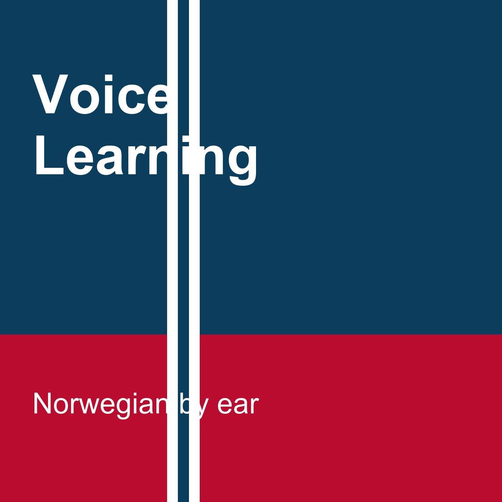
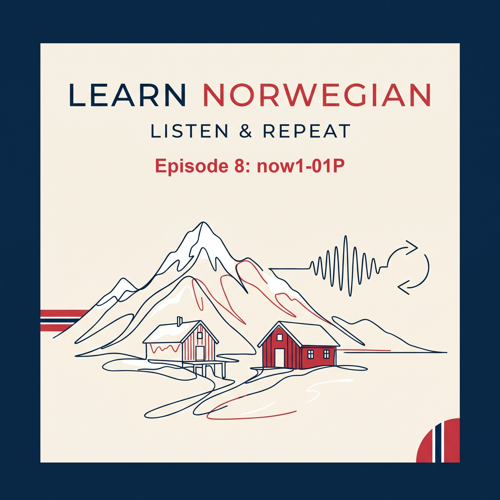

Episode 1 · 17 min
01K From Oslo by train
Episode 01K of the Norwegian course Norsk på nett (NOW) from NTNU, the Norwegian University of Science and Technology.

Listen-and-repeat Norwegian lessons for English speakers. Listen, repeat and speak out loud.
Add this link to any podcast app. Your app remembers where you stopped in each episode.
In other apps (Pocket Casts, Overcast, Castbox, AntennaPod, Podcast Addict) choose “Add by URL” or “Add RSS feed” and paste the link.
Episode 01K of the Norwegian course Norsk på nett (NOW) from NTNU, the Norwegian University of Science and Technology.
Episode 01A of the Norwegian course Norsk på nett (NOW) from NTNU, the Norwegian University of Science and Technology.
Episode 01M of the Norwegian course Norsk på nett (NOW) from NTNU, the Norwegian University of Science and Technology.

Episode 01P of the Norwegian course Norsk på nett (NOW) from NTNU, the Norwegian University of Science and Technology.
These are listening lessons for people learning Norwegian through English. You do not read anything: you listen, repeat and answer out loud.
Based on the free online course Norsk på nett (NOW) from NTNU, the Norwegian University of Science and Technology. Audio and exercises are my own study material; this podcast is not affiliated with or endorsed by NTNU.
Looking for grammar explanations? Visit the Norwegian grammar website.
Email: To be announced